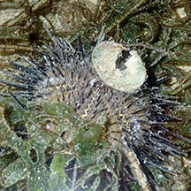

|
|
| echinoids text index | photo index |
| Phylum Echinodermata > Class Echinoidea | sand dollar | sea urchin | heart urchin |
| Echinoids Class Echinoidea updated Apr 2020
Where seen? Echinoids are sometimes seen on some of our shores. Sand dollars may be found in sand bars at the low water mark, or at the bottom of shallow sandy lagoons. Others such as sea urchins may be found among seagrasses especially during a seaweed bloom, or among coral rubble and living reefs. Heart urchins are more rarely encountered. What are echinoids? Echinoids belong to Phylum Echinodermata. The Class Echinoidae include sand dollars, sea urchins and heart urchins. There are 900-1,000 known echinoid species. Features: 'Echinus' means 'hedgehog' or 'prickly' and indeed, many echinoids look like prickly hedgehogs. While sea urchins have rounded, globular bodies, heart urchins have more oval-shaped bodies, and sand dollar are flat and round like coins. Like other echinoderms, they are symmetrical along five axes, have tube feet and spines. The spines of echinoids vary from long, scary ones on sea urchins, longish soft ones on heart urchins, and tiny ones on sand dollars. Like other echinoderms, they have mutable connective tissue as well as muscles which help move the spines. These moveable spines not only protect the animal, but may also used for walking and even to collect food from the water. The spines can also be locked in place to wedge themselves in a safe hiding place. |
 Thorny sea urchin. Beting Bronok, Jun 03 |
 Thick-edged sand dollar. East Coast, Nov 08 |
 Lovenia heart urchin. Kusu Island, Jul 04 |
| Test of Strength: Echinoids have
an internal skeleton (called the test) formed out of large ossicles
fused together in plates arranged like a sliced orange in multiples
of five. The test is rigid and hollow. Sand dollars may reinforce
the test with internal struts. To grow larger, each ossicle is enlarged,
and new ossicles added near the anus. The test has a 5-petalled design on the upperside called a petaloid. The petaloid is a series of tiny holes in the skeleton. Tube feet emerge through these holes and the animal breathes through these feet! Where do the spines of a dead echinoid go? Like us, echinoids have a skin covering the spines and the test. When an echinoid dies, the skin decays rapidly and all the spines fall off, leaving only the test. |
 Upperside of dead sand dollar. Changi, Jun 06 |
 Skeleton of a dead sea urchin Changi, May 02 |
 Upperside of a dead heart urchin. Pulau Sekudu, Dec 03 |
| Tube Feet Too! Like other echinoderms, echinoids also have tube feet. Like other echinoderms, the tube feet are operated hydraulically with the water vascular system that all echinoderms have. Some have tube feet that end in suckered discs that can stick to things and thus allow the animal to move, climb up vertical surfaces, dig or collect food. The tube feet are also used to sense chemicals, breathe, as well as excrete wastes! |
 Long tube feet of a sea urchin among its spines. Changi, Jun 05 |
 A sea urchin 'carrying' shells and stones. Beting Bronok, May 06 |
 Carrying a shell. Changi, Aug 19 |
 Baby
echinoids: Echinoids have separate genders and are usually
either male or female. They practice external fertilisation, releasing
eggs and sperm simultaneously into the water. The form that first
hatches from the eggs are bilaterally symmetrical and free-swimming,
drifting with the plankton. At this stage, they have several long
'arms' which are believed to funnel food particles into the central
mouth. They eventually settle down and develop into a more sea urchin-like
shape. Baby
echinoids: Echinoids have separate genders and are usually
either male or female. They practice external fertilisation, releasing
eggs and sperm simultaneously into the water. The form that first
hatches from the eggs are bilaterally symmetrical and free-swimming,
drifting with the plankton. At this stage, they have several long
'arms' which are believed to funnel food particles into the central
mouth. They eventually settle down and develop into a more sea urchin-like
shape.Status and threats: Some of our echinoids are listed among the threatened animals of Singapore. The main threat is habitat loss due to reclamation or human activities along the coast that pollute the water. Like other creatures of the intertidal zone, they are affected by human activities such as reclamation and pollution. Trampling by careless visitors and over-collection can also have an impact on local populations. |
| Class
Echinoidea recorded for Singapore For lists of species see individual pages for sand dollars | sea urchins | heart urchins |
Links
|